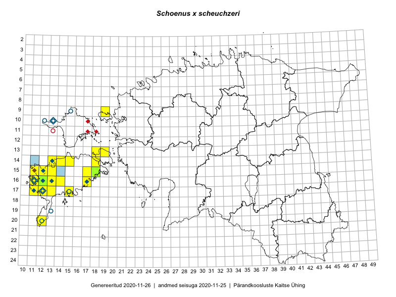

Schoenus ×scheuchzeri — suur sepsikas
Cyperaceae :: Schoenus ×scheuchzeri Brügger (47); Schoenus ferrugineus × Schoenus nigricans (39); Schoenus scheuchzeri Brügger (3)

Kaart põhineb 218 kirjel:
vaatlusi 50
herbaareksemplare 39
PKÜ kirjeid1 6
ELFi kirjeid2 123
Taime kaasaegsed ja ajaloolised leiukohad asuvad 26 ruudus.
Tingmärgid ja ruutude arvud periooditi (U3 / V4 )
█ 2006–2020 (20/–)
◆/◇ 1971–2005 (10/11)
○ 1921–1970 (7/5)
+ kuni 1920 (0/0)
× hävinud (–/0)
? kaheldav (–/0)
| Ruut | Leidja(d) | Leiuaeg | Kirje |
|---|---|---|---|
| 10-13 | Haide-Ene Rebassoo | 1957–1984 | ruut/ala: Schoenus ×scheuchzeri Brügger |
| 10-12 | Haide-Ene Rebassoo | 1957–1984 | ruut/ala: Schoenus ×scheuchzeri Brügger |
| 14-13 | Marek Sammul, Toomas Kukk | 1998-07-25 | ruut/ala: Schoenus ×scheuchzeri Brügger |
| 14-13 | Mari Reitalu | 1990–1998 | ruut/ala: Schoenus ×scheuchzeri Brügger |
| 16-11 | Mari Reitalu | 1972–2005 | ruut/ala: Schoenus ×scheuchzeri Brügger |
| 16-12 | Mari Reitalu | 1971–2005 | ruut/ala: Schoenus ferrugineus × Schoenus nigricans |
| 15-12 | Mari Reitalu | 1995 | ruut/ala: Schoenus ferrugineus × Schoenus nigricans |
| 17-11 | Mari Reitalu | 1971–1998 | ruut/ala: Schoenus ferrugineus × Schoenus nigricans |
| 17-12 | M. Reitalu | 1971 | ruut/ala: Schoenus ferrugineus × Schoenus nigricans |
| 16-13 | Mari Reitalu | 2015-08-29 | ruut/ala: Schoenus ×scheuchzeri Brügger |
| 16-11 | Mari Reitalu, Triin Reitalu | 2015-08-19 | ruut/ala: Schoenus ×scheuchzeri Brügger |
| 14-13 | Mari Reitalu, Triin Reitalu | 2015-08-14 | ruut/ala: Schoenus ×scheuchzeri Brügger |
| 17-12 | Mari Reitalu | 2014-08-31 | ruut/ala: Schoenus ×scheuchzeri Brügger |
| 17-12 | Mari Reitalu | 2014-09-02 | ruut/ala: Schoenus ×scheuchzeri Brügger |
| 17-12 | Mari Reitalu | 2015-08-13 | ruut/ala: Schoenus ×scheuchzeri Brügger |
| 16-12 | Mari Reitalu | 2015-08-23 | ruut/ala: Schoenus ×scheuchzeri Brügger |
| 16-12 | Mari Reitalu | 2015-09-03 | ruut/ala: Schoenus ×scheuchzeri Brügger |
| 17-13 | Mari Reitalu, Oliver Parrest | 2015-08-12 | ruut/ala: Schoenus ×scheuchzeri Brügger |
| 14-13 | Mari Reitalu, Oliver Parrest | 2015-07-24 | ruut/ala: Schoenus ×scheuchzeri Brügger |
| 15-12 | Mari Reitalu, Oliver Parrest | 2015-07-21 | ruut/ala: Schoenus ×scheuchzeri Brügger |
| 16-11 | Triin Reitalu, Mari Reitalu | 2015-08-09–2015-08-10 | ruut/ala: Schoenus ×scheuchzeri Brügger |
| 16-11 | Triin Reitalu, Mari Reitalu | 2015-08-09 | ruut/ala: Schoenus ×scheuchzeri Brügger |
| 17-11 | Mari Reitalu, Triin Reitalu | 2015-08-05 | ruut/ala: Schoenus ×scheuchzeri Brügger |
| 16-12 | Mari Reitalu | 2015-07-08 | ruut/ala: Schoenus ×scheuchzeri Brügger |
| 14-13 | Mari Reitalu, Oliver Parrest | 2015-07-24 | ruut/ala: Schoenus ×scheuchzeri Brügger |
| 15-12 | Mari Reitalu, Oliver Parrest | 2015-06-21 | ruut/ala: Schoenus ×scheuchzeri Brügger |
| 16-12 | Triin Reitalu, Mari Reitalu | 2015-07-08 | ruut/ala: Schoenus ×scheuchzeri Brügger |
| 16-11 | Mari Reitalu, Triin Reitalu | 2015-08-09–2015-08-10 | ruut/ala: Schoenus ×scheuchzeri Brügger |
| 14-14 | Sirje Azarov, Mari Reitalu | 2016-07-26 | ruut/ala: Schoenus ×scheuchzeri Brügger |
| 14-14 | Mari Reitalu, Sirje Azarov | 2016-07-26 | ruut/ala: Schoenus ×scheuchzeri Brügger |
| 14-18 | Mari Reitalu, Sirje Azarov | 2016-08-09–2016-08-10 | ruut/ala: Schoenus ×scheuchzeri Brügger |
| 17-13 | Mari Reitalu, Triin Reitalu | 2016-09-04 | ruut/ala: Schoenus ×scheuchzeri Brügger |
| 16-11 | Mari Reitalu | 2006-07-06 | ruut/ala: Schoenus ×scheuchzeri Brügger |
| 16-13 | Mari Reitalu | 2006-08-30 | ruut/ala: Schoenus ×scheuchzeri Brügger |
| 17-15 | Mari Reitalu | 2009-08-27 | ruut/ala: Schoenus ×scheuchzeri Brügger |
| 14-13 | Mari Reitalu, Maarja Nõmm, Raul Melsas | 2007-08-27 | ruut/ala: Schoenus ×scheuchzeri Brügger |
| 15-11 | Mari Reitalu | 2007-05-31–2007-09-14 | ruut/ala: Schoenus ×scheuchzeri Brügger |
| 16-11 | Mari Reitalu | 2007-08-08 | ruut/ala: Schoenus ×scheuchzeri Brügger |
| 15-12 | Mari Reitalu | 2006-09-13–2006-09-21 | ruut/ala: Schoenus ×scheuchzeri Brügger |
| 16-13 | Mari Reitalu, Triin Reitalu | 2013-08-18 | ruut/ala: Schoenus ×scheuchzeri Brügger |
| 09-19 | Mari Reitalu, Mare Leis | 2007-07-23 | ruut/ala: Schoenus ×scheuchzeri Brügger |
| 09-19 | Mari Reitalu, Mare Leis | 2007-07-23 | ruut/ala: Schoenus ×scheuchzeri Brügger |
| 09-19 | Mari Reitalu | 2007-07-26 | ruut/ala: Schoenus ×scheuchzeri Brügger |
| 20-12 | Mari Reitalu, Sirje Azarov | 2018-07-10–2018-07-12 | ruut/ala: Schoenus ×scheuchzeri Brügger |
| 20-12 | Sirje Azarov, Mari Reitalu | 2018-07-12 | ruut/ala: Schoenus ×scheuchzeri Brügger |
| 13-19 | Sirje Azarov, Mari Reitalu | 2018-08-07 | ruut/ala: Schoenus ×scheuchzeri Brügger |
| 15-12 | Mari Reitalu, Sirje Azarov | 2019-08-06 | ruut/ala: Schoenus ×scheuchzeri Brügger |
| 15-13 | Mari Reitalu, Sirje Azarov | 2019-08-31 | ruut/ala: Schoenus ×scheuchzeri Brügger |
| 16-14 | Mari Reitalu, Sirje Azarov | 2019-09-23 | ruut/ala: Schoenus ×scheuchzeri Brügger |
| 16-12 | Toomas Kukk, Peedu Saar | 2019-09-27 | ruut/ala: Schoenus ×scheuchzeri Brügger |
| 19-13 | T. Lippmaa | 1933-08-10 | TU350190: Schoenus ferrugineus × Schoenus nigricans |
| 20-12 | T. Lippmaa | 1933-08-09 | TU350191: Schoenus ferrugineus × Schoenus nigricans |
| 09-15 | V. Kuusk | 1970-07-11 | TU350194: Schoenus ferrugineus × Schoenus nigricans |
| 17-12 | B. Saarson | 1933-06-18 | TU350201: Schoenus ferrugineus × Schoenus nigricans |
| 16-11 | K. Eichwald | 1956-07-05 | TU350202: Schoenus ferrugineus × Schoenus nigricans |
| 10-13 | H. E. Rebassoo | 1957-06-20 | TU350205: Schoenus ferrugineus × Schoenus nigricans |
| 19-13 | T. Lippmaa | 1933-08-10 | TU350207: Schoenus ferrugineus × Schoenus nigricans |
| 20-12 | T. Lippmaa | 1933-08-08 | TU350209: Schoenus ferrugineus × Schoenus nigricans |
| 17-12 | R. Saarson | 1933-06-18 | TU350211: Schoenus ferrugineus × Schoenus nigricans |
| 17-12 | R. Saarson | 1933-06-18 | TU350212: Schoenus ferrugineus × Schoenus nigricans |
| 17-12 | R. Saarson | 1932-10-04 | TU350213: Schoenus ferrugineus × Schoenus nigricans |
| 17-12 | Bernhard Saarson | 1933-06-18 | TAA0055206: Schoenus ferrugineus × Schoenus nigricans |
| 17-12 | Bernhard Saarson | 1933-06-18 | TAA0055207: Schoenus ferrugineus × Schoenus nigricans |
| 15-12 | Toomas Kukk | 1998-07-25 | TAA0055208: Schoenus ferrugineus × Schoenus nigricans |
| 15-12 | Toomas Kukk | 1998-07-25 | TAA0055209: Schoenus ferrugineus × Schoenus nigricans |
| 17-12 | A. Jõgi | 1953-07-25 | TAA0055210: Schoenus ferrugineus × Schoenus nigricans |
| 10-13 | Maret Kask | 1956-06-30 | TAA0055211: Schoenus ferrugineus × Schoenus nigricans |
| 10-13 | Maret Kask | 1956-06-30 | TAA0055212: Schoenus ferrugineus × Schoenus nigricans |
| 10-13 | Maret Kask | 1956-06-30 | TAA0055213: Schoenus ferrugineus × Schoenus nigricans |
| 15-12 | Vilma Kuusk | 1972-07-18 | TAA0055214: Schoenus ferrugineus × Schoenus nigricans |
| 16-11 | Visolde Puusepp | 1959-07-16 | TAA0055215: Schoenus ferrugineus × Schoenus nigricans |
| 16-13 | Vilma Kuusk, Ants Roos | 1973-06-27 | TAA0055216: Schoenus ferrugineus × Schoenus nigricans |
| 16-30 | Vilma Kuusk, Ants Roos | 1973-06-27 | TAA0055217: Schoenus ferrugineus × Schoenus nigricans |
| 16-13 | Vilma Kuusk, Ants Roos | 1973-06-27 | TAA0055218: Schoenus ferrugineus × Schoenus nigricans |
| 16-11 | Ants Roos | 1973-06-26 | TAA0055219: Schoenus ferrugineus × Schoenus nigricans |
| 16-12 | Liivia Laasimer | 1972-07-19 | TAA0055220: Schoenus ferrugineus × Schoenus nigricans |
| 16-12 | Liivia Laasimer | 1972-07-19 | TAA0055221: Schoenus ferrugineus × Schoenus nigricans |
| 10-13 | Ants Roos, Maret Kask | 1970-07-16 | TAA0055222: Schoenus ferrugineus × Schoenus nigricans |
| 10-13 | Ants Roos, Maret Kask | 1970-07-16 | TAA0055223: Schoenus ferrugineus × Schoenus nigricans |
| 10-13 | Haide-Ene Rebassoo | 1957-06-20 | TAA0055224: Schoenus ferrugineus × Schoenus nigricans |
| 10-13 | Haide-Ene Rebassoo | 1957-06-20 | TAA0055225: Schoenus ferrugineus × Schoenus nigricans |
| 10-13 | Maret Kask | 1971-07-06 | TAA0055226: Schoenus ferrugineus × Schoenus nigricans |
| 16-12 | Liivia Laasimer | 1972-07-19 | TAA0055228: Schoenus ferrugineus × Schoenus nigricans |
| 16-17 | Toomas Kukk | 1998-08-20 | TAA0055229: Schoenus ferrugineus × Schoenus nigricans |
| 16-17 | Toomas Kukk | 1998-08-20 | TAA0055230: Schoenus ferrugineus × Schoenus nigricans |
| 16-12 | Toomas Kukk, Peedu Saar | 2019-09-27 | TAA0148440: Schoenus scheuchzeri Brügger |
| 16-12 | Toomas Kukk, Peedu Saar | 2019-09-27 | TAA0148441: Schoenus scheuchzeri Brügger |
| 16-12 | Toomas Kukk, Peedu Saar | 2019-09-27 | TAA0148441.dupl: Schoenus scheuchzeri Brügger |
| 15-18 | Elle Rajandu, Karin Kikas | 2015-07-24 | TAA0143073: Schoenus ×scheuchzeri Brügger |
| 17-12 | Mari Reitalu | 2002-10-28 | ELF: 4696 |
| 15-11 | Mari Reitalu, Eerik Leibak | 2007-05-31 | ELF: 2317 |
| 15-11 | Mari Reitalu, Eerik Leibak | 2007-05-31 | ELF: 2318 |
| 16-12 | Mari Reitalu, Eerik Leibak | 2008-10-04 | ELF: 9852 |
| 16-12 | Mari Reitalu, Eerik Leibak | 2008-10-04 | ELF: 9857 |
| 16-13 | Mari Reitalu | 2009-09-23 | ELF: 3691 |
| 17-12 | Mari Reitalu | 2009-07-23 | ELF: 4708 |
| 17-12 | Mari Reitalu | 2009-07-23 | ELF: 4711 |
| 17-12 | Mari Reitalu | 2009-07-26 | ELF: 6797 |
| 17-12 | Mari Reitalu | 2009-08-17 | ELF: 3045 |
| 16-12 | Mari Reitalu | 2009-06-02 | ELF: 4695 |
| 17-12 | Mari Reitalu | 2009-07-03 | ELF: 1322 |
| 16-11 | Meeli Mesipuu, Katrin Jürgens | 2004-06-14 | ELF: 1854 |
| 16-13 | Mari Reitalu | 2009-09-17 | ELF: 11114 |
| 16-13 | Mari Reitalu | 2009-09-17 | ELF: 11117 |
| 17-13 | Mari Reitalu | 2009-09-23 | ELF: 11129 |
| 17-13 | Mari Reitalu | 2009-09-24 | ELF: 11139 |
| 17-12 | Mari Reitalu | 2009-07-23 | ELF: 11151 |
| 17-12 | Mari Reitalu | 2009-07-23 | ELF: 11155 |
| 17-12 | Mari Reitalu | 2009-07-26 | ELF: 11158 |
| 17-12 | Mari Reitalu | 2009-07-30 | ELF: 11172 |
| 17-12 | Mari Reitalu | 2009-08-17 | ELF: 11182 |
| 17-12 | Mari Reitalu | 2009-08-17 | ELF: 11183 |
| 17-12 | Mari Reitalu | 2009-08-19 | ELF: 11187 |
| 17-12 | Mari Reitalu | 2009-08-19 | ELF: 11189 |
| 16-12 | Mari Reitalu | 2009-08-19 | ELF: 11192 |
| 16-12 | Mari Reitalu | 2009-08-19 | ELF: 11194 |
| 16-12;17-12 | Mari Reitalu | 2009-08-20 | ELF: 11196 |
| 17-12 | Mari Reitalu | 2009-08-20 | ELF: 11199 |
| 16-12 | Mari Reitalu | 2009-06-01 | ELF: 11241 |
| 16-12 | Mari Reitalu | 2009-06-01 | ELF: 11242 |
| 16-12 | Mari Reitalu | 2009-06-01 | ELF: 11243 |
| 16-12 | Mari Reitalu | 2009-06-01 | ELF: 11244 |
| 16-12 | Mari Reitalu | 2009-06-02 | ELF: 11245 |
| 16-12 | Mari Reitalu | 2009-06-02 | ELF: 11246 |
| 16-12 | Mari Reitalu | 2009-06-02 | ELF: 11248 |
| 16-12 | Mari Reitalu | 2009-06-02 | ELF: 11253 |
| 17-12 | Mari Reitalu | 2009-06-18 | ELF: 11254 |
| 17-12 | Mari Reitalu | 2009-06-17 | ELF: 11255 |
| 17-12 | Mari Reitalu | 2009-06-30 | ELF: 11262 |
| 17-12 | Mari Reitalu | 2009-07-02 | ELF: 11266 |
| 16-12;17-12 | Mari Reitalu | 2009-07-03 | ELF: 11272 |
| 16-12 | Mari Reitalu | 2009-07-03 | ELF: 11273 |
| 17-12 | Mari Reitalu | 2009-07-10 | ELF: 11275 |
| 17-12 | Mari Reitalu | 2009-07-10 | ELF: 11276 |
| 16-11 | Mari Reitalu | 2010-05-31 | ELF: 16213 |
| 16-11 | Mari Reitalu | 2010-05-31 | ELF: 16214 |
| 16-11 | Mari Reitalu | 2010-06-16 | ELF: 16221 |
| 16-11 | Mari Reitalu | 2010-06-16 | ELF: 16225 |
| 16-11 | Mari Reitalu | 2010-06-21 | ELF: 16234 |
| 16-11 | Mari Reitalu | 2010-06-21 | ELF: 16235 |
| 16-11 | Mari Reitalu | 2010-08-05 | ELF: 16240 |
| 16-12 | Mari Reitalu | 2010-06-06 | ELF: 16248 |
| 16-12 | Mari Reitalu | 2010-06-06 | ELF: 16254 |
| 16-11 | Mari Reitalu | 2010-06-27 | ELF: 16303 |
| 17-12 | Mari Reitalu | 2010-07-25 | ELF: 16352 |
| 17-12 | Mari Reitalu | 2010-08-11 | ELF: 16363 |
| 17-12 | Mari Reitalu | 2010-08-11 | ELF: 16370 |
| 17-13 | Mari Reitalu | 2010-08-11 | ELF: 16371 |
| 17-13 | Mari Reitalu | 2010-08-31 | ELF: 16375 |
| 17-12;17-13 | Mari Reitalu | 2010-08-31 | ELF: 16378 |
| 14-11 | Mari Reitalu | 2010-08-01 | ELF: 16389 |
| 15-11 | Mari Reitalu | 2010-08-18 | ELF: 16393 |
| 15-11 | Mari Reitalu | 2010-08-18 | ELF: 16402 |
| 15-11 | Mari Reitalu | 2010-08-16 | ELF: 16415 |
| 15-11 | Mari Reitalu | 2010-08-17 | ELF: 16420 |
| 15-11 | Mari Reitalu | 2010-08-17 | ELF: 16422 |
| 15-11 | Mari Reitalu | 2010-08-23 | ELF: 16438 |
| 15-11 | Mari Reitalu | 2010-08-23 | ELF: 16441 |
| 15-12 | Mari Reitalu | 2010-08-23 | ELF: 16448 |
| 15-12 | Mari Reitalu | 2010-08-23 | ELF: 16449 |
| 15-11 | Mari Reitalu | 2010-09-01 | ELF: 16461 |
| 15-11 | Mari Reitalu | 2010-09-06 | ELF: 16473 |
| 15-12;16-12 | Mari Reitalu | 2010-09-06 | ELF: 16479 |
| 16-11;16-12 | Mari Reitalu | 2010-09-08 | ELF: 16483 |
| 15-12 | Mari Reitalu | 2010-09-09 | ELF: 16487 |
| 15-12 | Mari Reitalu | 2010-09-09 | ELF: 16492 |
| 15-12 | Mari Reitalu | 2010-09-09 | ELF: 16493 |
| 16-12 | Mari Reitalu | 2010-09-09 | ELF: 16497 |
| 15-12 | Mari Reitalu | 2010-07-30 | ELF: 17055 |
| 15-12 | Mari Reitalu | 2010-07-30 | ELF: 17056 |
| 15-12 | Mari Reitalu | 2010-09-28 | ELF: 17070 |
| 16-12 | Mari Reitalu | 2010-09-29 | ELF: 17077 |
| 16-12 | Mari Reitalu | 2010-09-17 | ELF: 17092 |
| 16-12 | Mari Reitalu | 2010-09-17 | ELF: 17095 |
| 16-12 | Mari Reitalu | 2010-09-26 | ELF: 17111 |
| 16-12 | Mari Reitalu | 2010-09-20 | ELF: 17117 |
| 16-13 | Mari Reitalu | 2010-09-25 | ELF: 17127 |
| 15-13;16-13 | Mari Reitalu, Elo Hermann | 2010-09-23 | ELF: 17170 |
| 16-13 | Mari Reitalu | 2010-10-02 | ELF: 17175 |
| 16-11 | Mari Reitalu | 2010-05-31 | ELF: 4357 |
| 16-11 | Mari Reitalu | 2010-08-05 | ELF: 3574 |
| 16-11 | Mari Reitalu | 2010-08-05 | ELF: 1854 |
| 16-11 | Mari Reitalu | 2010-08-05 | ELF: 1472 |
| 15-12 | Mari Reitalu | 2010-09-29 | ELF: 1283 |
| 15-13 | Mari Reitalu, Elo Hermann | 2010-09-23 | ELF: 1294 |
| 16-12 | Mari Reitalu | 2010-09-08 | ELF: 19502 |
| 16-12 | Mari Reitalu | 2010-09-08 | ELF: 19504 |
| 16-12 | Mari Reitalu | 2010-09-08 | ELF: 19506 |
| 15-12 | Mari Reitalu | 2010-09-14 | ELF: 19527 |
| 16-12 | Mari Reitalu | 2012-08-01 | ELF: 1314 |
| 16-12 | Mari Reitalu | 2012-08-10 | ELF: 1323 |
| 16-12 | Mari Reitalu | 2012-08-01 | ELF: 23970 |
| 14-13 | Mari Reitalu | 2012-08-21 | ELF: 1307 |
| 14-13;15-13 | Mari Reitalu | 2012-08-21 | ELF: 1306 |
| 14-13 | Mari Reitalu | 2012-08-22 | ELF: 1298 |
| 15-13 | Mari Reitalu | 2012-08-23 | ELF: 23984 |
| 15-13 | Mari Reitalu | 2012-08-24 | ELF: 1293 |
| 15-13 | Mari Reitalu | 2012-08-24 | ELF: 1295 |
| 15-13 | Mari Reitalu | 2012-08-24 | ELF: 23989 |
| 15-13 | Mari Reitalu | 2012-08-24 | ELF: 23988 |
| 15-14 | Mari Reitalu | 2012-08-25 | ELF: 23037 |
| 17-12 | Mari Reitalu | 2012-09-02 | ELF: 23998 |
| 17-12 | Mari Reitalu | 2012-09-02 | ELF: 23997 |
| 17-13 | Mari Reitalu | 2012-09-02 | ELF: 23026 |
| 17-13 | Mari Reitalu | 2012-09-02 | ELF: 23027 |
| 17-13 | Mari Reitalu | 2012-08-15 | ELF: 6671 |
| 17-13 | Mari Reitalu | 2012-08-15 | ELF: 23519 |
| 16-12 | Mari Reitalu | 2012-08-28 | ELF: 24001 |
| 16-12 | Mari Reitalu | 2012-08-28 | ELF: 24002 |
| 15-11 | Mari Reitalu | 2012-09-04 | ELF: 1311 |
| 15-11;16-11 | Mari Reitalu | 2012-09-04 | ELF: 1310 |
| 15-11 | Mari Reitalu | 2012-09-04 | ELF: 24003 |
| 16-11 | 2004-06-14 | PKÜ: 11814 | |
| 16-11 | 2004-06-14 | PKÜ: 11815 | |
| 15-11;16-11 | 1999-10-12 | PKÜ: 1210 | |
| 16-11 | 1999-10-12 | PKÜ: 1211 | |
| 16-11 | 2004-06-13 | PKÜ: 11813 | |
| 16-11 | 2004-06-13 | PKÜ: 11810 |
Pärandkoosluste Kaitse Ühingu (PKÜ) andmebaas sisaldab inventeeritud koosluste kirjeldusi ja liigiloendeid. Kõige enam on andmeid niidutaimede kohta.↩︎
Eestimaa Looduse Fondi (ELF) andmebaas sisaldab inventeeritud koosluste kirjeldusi ja liigiloendeid. Eriti rohkesti on andmeid märgalade kohta.↩︎
Ruutude arv uue atlase andmekogu järgi. Muuhulgas arvestab vanemat herbaariumi, 2005. aasta atlase välitöölehtedelt uuesti digitaliseeritud andmeid jne. Uue atlase andmekogust pärinevad andmed on kaardile kantud siniste sümbolitega.↩︎
Ruutude arv 2005. aasta atlase (Kukk, T., Kull, T., Eesti taimede levikuatlas. Eesti Maaülikool, Põllumajandus- ja Keskkonnainstituut, Tartu, 2005) järgi. Andmeallikana on kasutatud levik.exe programmi, kus igas ruudus on registreeritud vaid uusim leid. Seetõttu on vanemate perioodide kohta andmed puudulikud. Kasutatud levik.exe andmestikus leidub mõningaid kõrvalekaldeid atlase trükis ilmunud versioonist, sagedamini tarnade ja käpaliste seas. Lisaks leidub selles andmestikus valik liike (peamiselt väheste leidudega tulnuktaimed), mille kaarte trükis ei avaldatud. Vana atlase andmed ruutudest, milles ei ole uue atlase andmekogus leide enne 2006. aastat, on kaardil esitatud punaste sümbolitega. Vana atlase andmetel hävinud ja kaheldavaid leiukohti pole hilisemate (taas)leidude põhjal korrigeeritud.↩︎